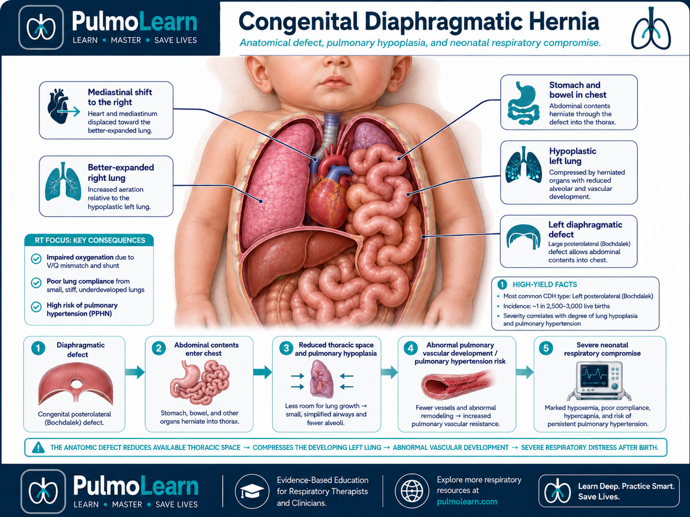
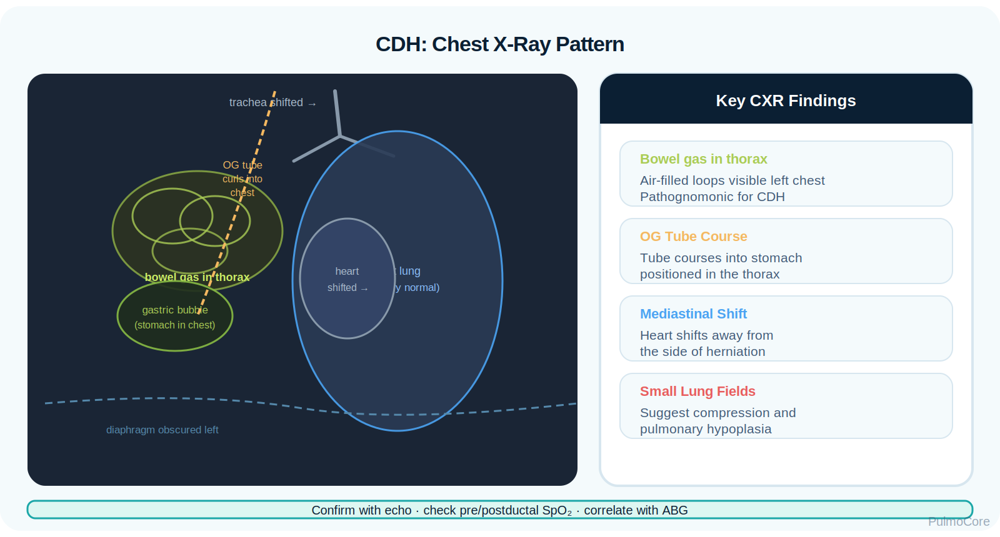
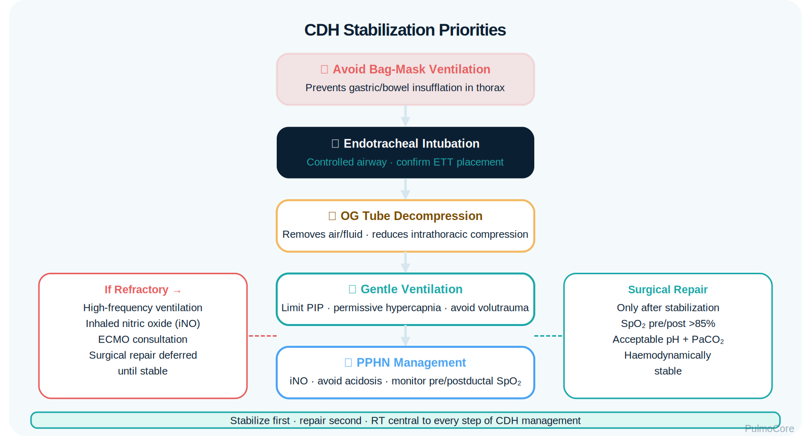

Congenital diaphragmatic hernia (CDH) is a neonatal respiratory emergency in which abdominal organs herniate through an incompletely formed diaphragm, compress the developing lungs, and contribute to pulmonary hypoplasia and pulmonary hypertension. This module focuses on RT recognition, stabilization, diagnostic interpretation, ventilatory priorities, and escalation logic.
Category Neonatal Respiratory Disorder
Estimated Time 30–40 minutes
Level Core RT Knowledge
Learning Objectives
By the end of this CDH module, learners should be able to connect abnormal diaphragm development, lung hypoplasia, pulmonary hypertension, neonatal distress, stabilization priorities, diagnostic findings, and escalation decisions.
1. Explain pathophysiology Describe how abdominal organ herniation compresses the lung and limits pulmonary development.
2. Recognize the bedside pattern Identify respiratory distress, scaphoid abdomen, asymmetric chest findings, and bowel sounds in the chest.
3. Interpret diagnostics Use chest x-ray, pre/postductal saturations, ABGs, echo findings, and prenatal history to support CDH reasoning.
4. Escalate safely Prioritize intubation, gastric decompression, gentle ventilation, PPHN management, and ECMO consultation when indicated.
Video Overview
2-Minute Congenital Diaphragmatic Hernia Overview
Watch this quick overview before moving into the disease snapshot.
Disease Snapshot
CDH is not primarily a surfactant problem or routine transient tachypnea. The major RT concern is that the newborn may have small, vulnerable lungs plus high pulmonary vascular resistance. Positive pressure must be used carefully because excessive pressures can injure hypoplastic lungs and bag-mask ventilation may inflate bowel in the chest.
What it is: Defect in the diaphragm allowing abdominal contents into the chest.
Primary problem: Pulmonary hypoplasia, lung compression, and pulmonary hypertension.
Classic signs: Severe distress, scaphoid abdomen, diminished breath sounds, bowel sounds in chest.
Diagnostic clue: Chest x-ray showing bowel loops or stomach in thorax with mediastinal shift.
RT priority: Avoid routine bag-mask ventilation, support oxygenation/ventilation gently, decompress stomach, and escalate early.
RT Clinical Connection
For RTs, CDH is a stabilization problem before it is a surgical repair problem. The RT must protect fragile lungs, avoid gastric insufflation, monitor oxygenation and ventilation trends, and recognize pulmonary hypertension physiology.
Board Prep Frame
Immediately associate CDH with newborn distress, scaphoid abdomen, bowel in chest, pulmonary hypoplasia, pulmonary hypertension, intubation rather than bag-mask ventilation, OG tube decompression, gentle ventilation, and delayed surgical repair after stabilization.
Quick Pre-Check
Start with the core CDH pattern
Which statement best describes the core respiratory problem in congenital diaphragmatic hernia?
Anatomy & Pathophysiology
In CDH, the diaphragm does not fully separate the abdominal and thoracic cavities. Herniated stomach, bowel, liver, or spleen can compress the ipsilateral lung and shift the mediastinum. The result may be pulmonary hypoplasia, abnormal pulmonary vasculature, V/Q mismatch, and persistent pulmonary hypertension of the newborn.

Diaphragm defect → abdominal contents enter chest → lung compression during development → pulmonary hypoplasia + abnormal pulmonary vessels → high pulmonary vascular resistance → right-to-left shunting → severe hypoxemia.
High-Yield Mechanism Map
CDH Change
What Happens
Why It Matters
Diaphragm defect
Abdominal contents move into the thorax.
Reduces thoracic space for lung development.
Pulmonary hypoplasia
Lung tissue and vascular bed are underdeveloped.
Limits gas exchange and increases ventilator vulnerability.
Pulmonary hypertension
Pulmonary vascular resistance remains high.
Promotes right-to-left shunting and refractory hypoxemia.
Mediastinal shift
Heart and mediastinum shift away from herniation.
Can impair cardiopulmonary function.
Gastric/bowel distention
Air-filled bowel expands in the chest.
Further compresses the lung; avoid bag-mask ventilation when suspected.
Danger Sign
A newborn with suspected CDH should not receive routine prolonged bag-mask ventilation because it can insufflate herniated stomach or bowel and worsen lung compression.
Click the CDH Hotspots
Click each hotspot to reveal how the anatomy drives RT decision-making.
Start here: Click all four hotspots to complete this activity.
0 / 4 hotspots reviewed
Etiology, Prenatal Clues & Risk Factors
CDH is usually identified prenatally or at birth. The defect most commonly occurs posterolaterally and is more often left-sided. Prenatal diagnosis allows delivery planning at a center with neonatal surgery, advanced ventilation, pulmonary hypertension support, and ECMO capability.
Finding or Risk Factor
Why It Matters
RT Teaching Focus
Prenatal ultrasound diagnosis
Allows planned delivery and immediate stabilization.
Anticipate intubation and OG decompression.
Left-sided defect
Common pattern; stomach/bowel may be in thorax.
Look for mediastinal shift and asymmetric breath sounds.
Liver herniation
May indicate more severe thoracic crowding.
Prepare for higher acuity support.
Low lung-to-head ratio
Suggests more severe pulmonary hypoplasia.
Anticipate difficult oxygenation/ventilation.
Associated anomalies
Cardiac or genetic findings can worsen prognosis.
Coordinate closely with NICU team.
Sort the CDH Findings
Choose the best category for each item, then check your answers.
Prenatal ultrasound shows stomach in the chest
Place an orogastric tube for decompression
Scaphoid abdomen after birth
Refractory hypoxemia with acidosis
Gentle mechanical ventilation after intubation
Complete the sorting activity to continue.
Clinical Manifestations
CDH may present immediately after birth with severe respiratory distress. The RT should look beyond tachypnea and cyanosis and assess chest symmetry, abdomen shape, breath sounds, heart sounds, oxygen requirement, and response to ventilation.
Finding Type
What the RT May See
Respiratory distress
Tachypnea, grunting, retractions, cyanosis, severe oxygen need.
Chest/abdomen
Barrel or asymmetric chest with scaphoid abdomen.
Breath sounds
Diminished on affected side; bowel sounds may be heard in chest.
Cardiac clues
Displaced heart sounds or signs of poor perfusion.
Oxygenation clues
Low SpO₂, possible pre/postductal split, poor response to escalating FiO₂.
Ventilation clues
Respiratory acidosis if ventilation fails; risk worsens with fatigue or inadequate support.
Important Teaching Point
Do not treat suspected CDH like routine neonatal distress with prolonged bag-mask ventilation. Early controlled airway support and gastric decompression are high-yield priorities.
Diagnostics & Assessment
Diagnostics confirm the anatomy, evaluate pulmonary hypertension physiology, and guide stabilization. RTs should connect imaging and gas exchange data to bedside ventilation decisions.

Chest X-ray Pattern
Finding
CDH Pattern
Bowel gas in thorax
Air-filled loops may be visible in the chest.
Nasogastric/OG tube course
Tube may curl into stomach positioned in thorax.
Mediastinal shift
Heart and mediastinum shift away from herniation.
Small lung fields
Suggest compression and hypoplasia.
ABG and Oxygenation Patterns
Pattern
Meaning
Low PaO₂ despite high FiO₂
May reflect shunting/PPHN physiology.
Rising PaCO₂
Ventilation is inadequate or pressures are being limited by lung-protective strategy.
Metabolic or respiratory acidosis
Can worsen pulmonary vascular resistance and instability.
Pre/postductal SpO₂ split
Supports ductal shunting and pulmonary hypertension physiology.
Severity is driven by how much lung is available for gas exchange, the degree of pulmonary hypertension, and how the newborn responds to gentle support. CDH patients may be difficult to oxygenate because blood can bypass the lungs through fetal shunts.
Preductal SpO₂ Right hand value reflects oxygenation before ductal mixing.
Postductal SpO₂ Lower extremity value reflects oxygenation after ductal mixing.
Large split May indicate right-to-left shunting and significant PPHN.
Oxygenation Activity
A newborn with suspected CDH has preductal SpO₂ 92% and postductal SpO₂ 78% despite high FiO₂. What does this most strongly suggest?
Severity & Red Flags
The key question is not simply “Does this newborn have CDH?” The key question is whether oxygenation, ventilation, perfusion, and acid-base status can be stabilized without injuring hypoplastic lungs.
Red Flag
Why It Matters
Severe hypoxemia despite high FiO₂
May indicate shunting, severe hypoplasia, or PPHN.
Worsening acidosis
Increases pulmonary vascular resistance and instability.
High ventilator pressures needed
Raises barotrauma risk in hypoplastic lungs.
Shock or poor perfusion
Signals cardiovascular compromise.
Large pre/postductal split
Suggests significant right-to-left shunting.
Delayed recognition with bag-mask ventilation
Can inflate bowel and worsen compression.
Management & Treatment
Initial CDH management focuses on stabilization, not immediate operative repair. The newborn usually needs airway control, gastric decompression, gentle ventilation, correction of hypoxemia/acidosis, pulmonary hypertension management, and consultation with neonatal surgery and ECMO-capable teams when severe.

Stabilization Priorities
Action
Why It Helps
RT Emphasis
Avoid routine bag-mask ventilation
Prevents gastric/bowel insufflation in thorax.
Anticipate controlled intubation when suspected.
Endotracheal intubation
Provides controlled ventilation.
Confirm placement and monitor pressures carefully.
OG tube decompression
Removes air/fluid from stomach and bowel.
Helps reduce intrathoracic compression.
Gentle ventilation
Limits ventilator-induced lung injury.
Avoid excessive PIP/volumes; monitor ABGs.
PPHN support
Reduces shunting when pulmonary vascular resistance is high.
Monitor pre/postductal SpO₂ and response.
Surgical repair after stabilization
Corrects the defect when patient can tolerate surgery.
Continue respiratory support pre/post-op.
CDH Stabilization Sequence
Select the steps in the best general order for a newborn with suspected CDH and severe distress.
Recognize suspected CDH and avoid routine bag-mask ventilation
Prepare for controlled endotracheal intubation
Place OG tube for gastric decompression
Begin gentle ventilation and monitor pressures
Assess ABG, pre/postductal SpO₂, echo findings
Escalate to HFV/iNO/ECMO team if refractory
Complete the sequence activity to continue.
Escalation: HFV, iNO, ECMO & Surgical Timing
Severe CDH may require advanced support when conventional ventilation cannot achieve acceptable gas exchange safely. Surgical repair is typically delayed until physiologic stabilization because uncontrolled pulmonary hypertension, acidosis, and shock increase risk.
Vent goal: Support gas exchange while protecting small hypoplastic lungs from pressure injury.
Escalation concept: HFV, iNO, vasoactive support, and ECMO consultation may be needed depending on physiology and local protocol.
Board Pearl
In suspected CDH, do not choose immediate bag-mask ventilation as the best answer when controlled intubation and gastric decompression are available. Stabilization comes before definitive surgical repair.
Respiratory Therapist Role
The RT is central to early recognition, ventilatory support, monitoring, escalation, and team communication. CDH care requires careful attention to pressure limits, gas exchange trends, perfusion, and pulmonary hypertension signs.
RT Task
What to Assess or Do
Why It Matters
Recognize CDH pattern
Distress, scaphoid abdomen, asymmetric breath sounds, bowel in chest.
Prevents harmful routine BMV approach.
Support airway
Assist with intubation, confirm tube placement, secure airway.
Triggers HFV/iNO/ECMO consultation and team response.
Guided Unfolding Case Study
The Newborn Who Should Not Be Bagged
This guided case reveals one clinical stage at a time. Learners make an RT decision, receive feedback, and then continue to the next stage.
Stage 1: Delivery Room Recognition
A term newborn has immediate severe respiratory distress. The abdomen appears scaphoid. Breath sounds are very diminished on the left, and heart sounds are shifted right.
RR 70/min
SpO₂ 78% preductal
Appearance Cyanotic, retractions
Decision Question: What is the priority RT action?
Stage 2: Stabilization
The newborn is intubated. Breath sounds are confirmed bilaterally but remain reduced on the left. The chest x-ray shows bowel loops in the left chest and mediastinal shift.
Decision Question: Which bedside action helps reduce intrathoracic compression?
Stage 3: Oxygenation Trend
Despite FiO₂ 1.0, preductal SpO₂ is 91% and postductal SpO₂ is 75%. ABG shows pH 7.18, PaCO₂ 62 mm Hg, PaO₂ 42 mm Hg.
Decision Question: What does this pattern suggest?
Stage 4: Escalation Decision
Conventional ventilation requires increasing pressure, and oxygenation remains poor. The team discusses HFV, pulmonary vasodilator therapy, and ECMO consultation.
Decision Question: Which concept best supports escalation?
Case Wrap-Up
RT Takeaway: CDH stabilization prioritizes controlled ventilation, gastric decompression, lung protection, and rapid recognition of pulmonary hypertension physiology.
If the newborn worsens: refractory hypoxemia, acidosis, shock, or rising ventilator pressure needs require urgent escalation and possible ECMO-capable team involvement.
Knowledge Check
Board-Style Practice
Answer each question to complete this activity. Answer choices shuffle each time the lesson opens.
Question 1
A newborn has severe respiratory distress, a scaphoid abdomen, and bowel sounds heard over the left chest. Which diagnosis should the RT suspect?
Question 2
Which action is most appropriate when CDH is suspected immediately after birth?
Question 3
What is the purpose of placing an orogastric tube in a newborn with CDH?
Question 4
A CDH newborn has refractory hypoxemia, acidosis, and a large pre/postductal saturation split. Which complication is most likely contributing?
0 / 4 questions answered
FAQ
Common CDH Questions
What is the simplest way to understand CDH?
CDH is a diaphragm defect that lets abdominal organs move into the chest, limiting lung development and causing severe newborn respiratory distress.
Why is CDH dangerous after birth?
The newborn may have hypoplastic lungs, pulmonary hypertension, right-to-left shunting, and poor oxygenation despite high oxygen support.
Why avoid bag-mask ventilation?
Mask ventilation can inflate the stomach and bowel that are already in the chest, worsening lung compression.
Why is surgery not always immediate?
The infant usually needs physiologic stabilization first. Severe hypoxemia, pulmonary hypertension, acidosis, and shock increase operative risk.
What does a pre/postductal saturation split mean?
A lower postductal saturation can suggest right-to-left ductal shunting from elevated pulmonary vascular resistance.
What is the RT’s biggest ventilator concern?
Support gas exchange while avoiding excessive pressures or volumes that can injure small hypoplastic lungs.
Summary & Clinical Pearls
Congenital diaphragmatic hernia is a neonatal respiratory emergency caused by herniation of abdominal organs into the thorax. The RT must recognize the bedside pattern, avoid harmful bag-mask ventilation when suspected, support controlled intubation, decompress the stomach, use gentle ventilation, monitor pulmonary hypertension physiology, and escalate early when gas exchange fails.
Must know: CDH causes pulmonary hypoplasia and compression, not just temporary fluid retention.
Board pearl: Suspected CDH → avoid routine BMV, intubate, and decompress with OG tube.